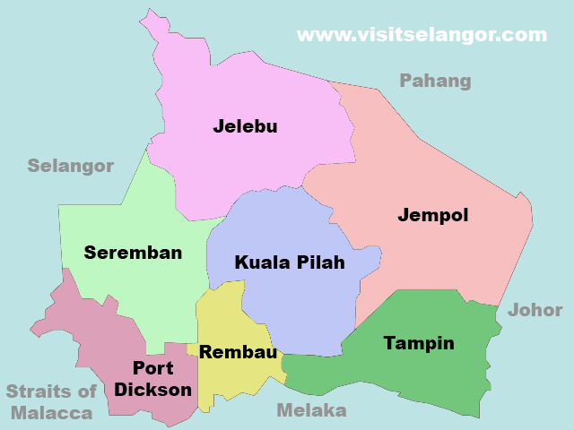

NATRAH
- MYSELF
- MY QUOTES
- GALLERY
- EXPERIENCE
- My EDUCATION
MY EDUCATION
Primrary School SK Batang Benar
I went to school in Nilai and lived with my aunt before i moved to Nilai my old school was at Sk Sungai Besi after my mom and dad divorced. I decided to stay with my auntie and study at Nilai. Batang Benar School is a village school with a large number of aboriginal students.As conclusion with the help of a very experienced teacher at the school, I received 4A1C for upsr.
Secondary School SMK KLIA
Because my aunt was a teacher at SMK KLIA, I completed my secondary school studies there after receiving my UPSR. Aside from that, SMK KLIA is a relatively well-known school throughout the state, and it must have teachers who are very dedicated to passing on their expertise, as seen by the fact that pupils at this school have consistently received straight "A" grades. Furthermore, the school organises a variety of fun activities by inviting artists. I also received my SPM results, which were excellent, with a grade of 5A.

University Uitm Rembau
I will earned a diploma in information management. I am currently in Sem 5, which is the final semester. I was unaware of the existence of Uitm Rembau until I arrived there. Uitm is quite intriguing to me and offers a pleasant studying environment. I also got a dean's award for the assistance of lecturers who are very helpful in completing tasks.
